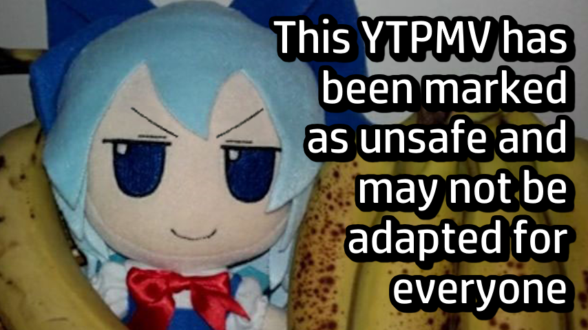

Hover a setting to get more information about it. Cookies are used solely to save the modified settings and the highest score.
For simplicity, the term "work" is used to talk about YTPMV and 音MAD at the same time.
The interface is very simple. It's composed of a player, with a play (▶️), pause (⏸️), stop (⏹️), forward (⏩) and backward (⏪) button, as well as a seek bar which can only be used when the work has been played at least once. Below this player are two inputs, respectfully for source and song guesses. You can put one guess per input at a time. You can submit your answers with the "Submit" button, and if you are stuck and want to move on, you have the "Reveal" button which will end the round and show the answers.
On the top left-hand corner is shown the current round number. On the top right-hand corner is displayed your current score. And, finally, if enabled, is indicated on the bottom left-hand corner the time left before the end of the round.
All answers are in lowercases, and the most popular one are written in English. However, some are still in their original languages (mostly Japanese, Chinese, or Korean). This may explain why you can't find what you're looking for sometimes.
A correct guess gives 100 points. If you make multiple correct guesses in a row, you have a multiplier based on your streak. For example, eight correct guesses in a row would be worth 800 points.
This only applies for desktop or computer users. You can hover on a key symbol to get his name.
This project was possible thanks to otodb (not affiliated)! Each entry was scraped in order to collect only the information the game needs (work ID, creator(s), source(s), song(s), name, links and thumbnail). Everything is stored locally for better performances, and to avoid request spam. There are currently 18,878 registered works!
The iframe APIs of YouTube, Niconico and SoundCloud are used to play the YTPMV correctly. There is currently not support for Bilibili, Twitter and AcFun because they don't have any kind of API.
And finally, the code is open source on GitHub!

Sources
Songs
 High score: 0
v2.0.0
High score: 0
v2.0.0
High score: 0
v2.0.0
High score: 0
v2.0.0
High score: 0
v2.0.0
High score: 0
v2.0.0